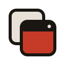

A warm, local, minimal-native system for an Indonesian software studio. Two worlds — a warm brand world, and a native Windows-11 world for the WinTick product.
Foundations
Warm saga red leads; everything sits on warm stone neutrals, never cold gray. Functional signals are held separate from the brand. The native world keeps its own Fluent palette.
Saga — primary brand red
Tanah — warm stone neutrals
Emas accent + functional signals
Native Windows-11 surfaces
Foundations
Plus Jakarta Sans — an Indonesian-origin typeface (commissioned as the identity of Jakarta) — across the brand. JetBrains Mono for keys, shortcuts, config and the performance proof-numbers.
Mono — proof numbers & config
Foundations
4px base grid, moderate rounding, warm-tinted low-spread shadows (never pure black).
Spacing
Radii
Shadows
Brand
No real logo exists yet — a typographic wordmark, "W" monogram, and a generic stacked-windows product glyph stand in as placeholders. Voice is warm, precise, honest, bilingual; no emoji.

“Hook keyboard diblokir — coba jalankan sebagai Administrator.”
Solutive: every warning offers the next step.
Tekan Win + ` untuk mencoba.
“ERROR 0x8007 — Hook Failed!!! 🚨”
No codes-as-headlines, no shouting, no emoji.
“The Best Window Switcher Ever”
No hype, no Title Case.
Library
Live from the compiled bundle — focused on WinTick's needs plus brand marketing. Interact with them: toggle switches, click the shortcut capturer.
In use
The published system ships one interactive UI kit — the native app world (onboarding, tray, settings). Two further kits and the brand slide templates exist in the private repository and are not published; see readme.md for why.